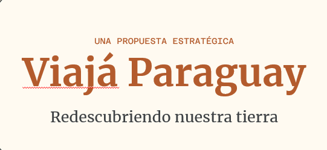

Itapúa
Piedras, historia y silencio entre las ruinas que guardan la memoria de las misiones.
La guía local de Paraguay
Rincones auténticos, sabores que abrazan y aventuras que empiezan a la vuelta de la esquina.

Elegí tu mood
Cada lugar tiene su propio ritmo.
Encontrá el tuyo.
Para empezar a soñar
Piedras, historia y silencio entre las ruinas que guardan la memoria de las misiones.
Senderos verdes, cascadas y aire puro para perderte en el corazón de Paraguarí.
Barrancas coloradas y miradores sobre el Paraná para una escapada con espíritu aventurero.
Una caída de agua imponente entre selva nativa, perfecta para sentir la fuerza del bosque.
Un refugio de biodiversidad donde cada sendero revela sonidos y colores de la selva.
Altura, neblina y panoramas serranos para contemplar Paraguay desde otra perspectiva.
Bosque atlántico, arroyos y vida silvestre en uno de los tesoros naturales del sur.
El gran Chaco paraguayo en estado puro: horizonte abierto, fauna y aventura inolvidable.
Atardeceres dorados, pueblos con encanto y una pausa tranquila junto al lago.
La cima más alta del Paraguay para caminar entre montes, esfuerzo y vistas enormes.
Selva, senderos y fauna nativa para explorar uno de los grandes refugios verdes del país.
Cascadas, bosque atlántico y caminos para descubrir la fuerza del agua en la frontera este.
Una escapada entre rocas y agua cristalina para refrescarte y salir de la rutina.
Colores, barro y tradición en un paseo para conocer el arte que nace en las manos de Areguá.
No encontramos ese destino todavía. Probá con otra palabra.
Armá tu propia historia
Elegí una región, mezclá experiencias y dejá que el camino te sorprenda.
Rutas provisionales
Probá una de estas combinaciones y empezá a desbloquear Paraguay.
Seleccioná una ruta para comenzar.
Tu progreso de explorador
El Paraguay que ya conocés y el que todavía te espera.
Completá 2 destinos más para desbloquear la región Este.
Club viajaPY
Viajá, descubrí y canjeá beneficios
en lugares que comparten tu camino.
Beneficios para vos
Bitácora viajaPY
Entre chipá, sopa y tereré, hay una forma distinta de conocer un lugar.
Leer historia ↗Tu próxima historia empieza acá
Entrá para guardar destinos, sumar puntos y continuar tu mapa.